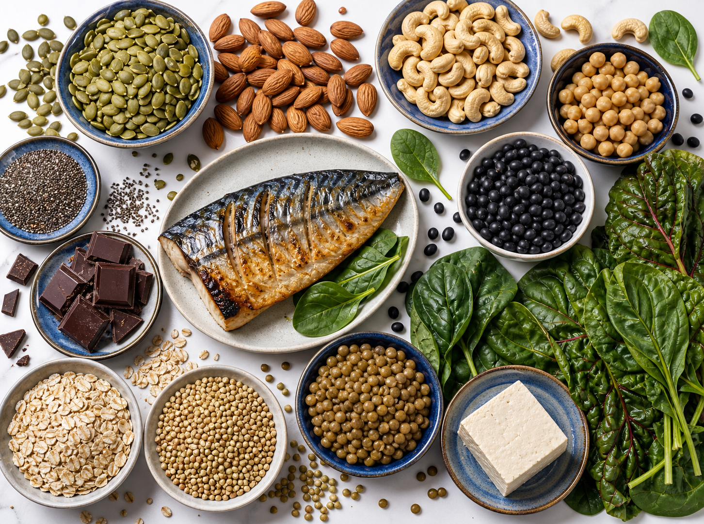

가장 강력한 급원 TOP 5 · mg/100g
1
치아씨 chia seed
~335mg
2
아몬드 · 캐슈넛 almond · cashew
~270mg
3
호박씨 볶은 것 · 생것은 더 ↑
~260mg
4
다크초콜릿 카카오 70~85%
~230mg
5
메밀 건조 · 통곡물
~230mg
무가당 코코아파우더 ~500mg 으로 가장 높지만 1회 섭취량이 적어 실질 급원은 씨앗·견과입니다.
분류별 대표 식품 (가식부 100g당 대략치)
씨앗 · 견과 SEEDS · NUTS
코코아파우더 ~500 · 치아씨 ~335 · 아몬드/캐슈넛 ~270 · 호박씨 ~260 · 다크초콜릿 ~230 · 땅콩 ~170
콩류 LEGUMES
검은콩 · 대두 (건조) ~180~280 · 풋콩 ~60 · 두부 ~50 (간수 응고 시 ↑) · 병아리콩 · 렌틸 (삶은 것) ~35~50
통곡물 WHOLE GRAINS
메밀 (건조) ~230 · 오트밀 (건조) ~140~180 · 현미밥 ~40~45 — 정제 곡물은 도정 중 대부분 소실
녹색채소 · 해조류 · 어류 GREENS · FISH
시금치 · 근대 (익힌 것) ~85 · 고등어 ~80~95 · 연어 ~27~30 · 건조 다시마 · 미역 매우 높음 (1회량 적음)
알아두면 좋은 점
흡수를 높이려면
- 통곡물 · 콩 · 씨앗의 피트산 (phytic acid) 이 흡수를 방해
- 불림 · 발효 · 조리 하면 흡수율 개선
- 정제 · 도정 곡물은 마그네슘이 대부분 사라집니다
상한섭취량 오해
- 상한섭취량 350mg/일은 보충제 · 제산제 등 식품 외 급원에만 적용
- 신장 기능이 정상이면 식품으로 인한 과잉은 걱정할 필요가 없습니다 (남는 양은 소변으로 배설)
결핍 위험 · 상담 필요
- PPI 장기 복용 시 저마그네슘혈증 (FDA 경고) — 식이만으로 교정이 어려울 수 있음
- 만성 설사 · 흡수장애 · 알코올 과다 시 결핍 ↑
- 신기능 저하 시 마그네슘 완하제 · 제산제 주의